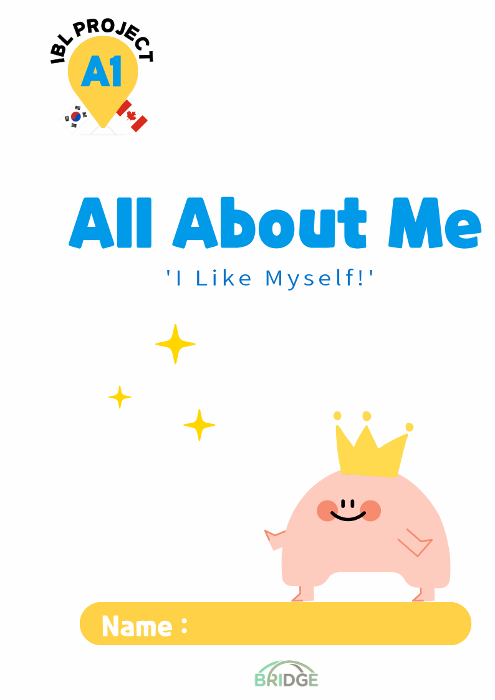

Private Access Only
Premium Digital Learning Platform for Bridge Academy Leaders

자아 인식과 기초 감각 탐구를 통해
북미 사립학교 스타일의 창의적 사고를 형성하는 입문 과정입니다.

사회와 자연의 연결 고리를 탐구하며
심화된 언어 표현과 비판적 사고력을 확장하는 고학년 과정입니다.
인공지능이 아이의 발음과 언어 자신감을
실시간으로 분석하여 전문 리포트를 제공합니다.
시각적 예술 활동과 언어적 탐구가 결합된
다면적 커리큘럼으로 아이의 잠재력을 깨웁니다.
IB 교육 전문가의 관점으로 분석된
매수업 별 교육 인사이트가 학부모님께 공유됩니다.